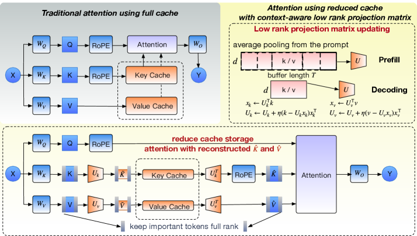

Why it matters왜 중요한가
Processing a 32K-token prompt with Llama-3.1-8B in float16 at batch size 4 consumes an extra 16 GB for the KV cache — rivalling the size of the model weights themselves.
Llama-3.1-8B로 32K 토큰 프롬프트를 float16·배치 4로 처리하면 KV 캐시가 16 GB를 추가로 먹는다 — 모델 가중치 크기에 맞먹는다.
Low-rank projection compresses the channel dimension of keys and values into a small latent space, and unlike token eviction it throws away no tokens. But every prior projection method — EigenAttention, MatryoshkaKV, StaticPCA — learns its subspace once, offline, from a calibration set, implicitly assuming inference prompts look like calibration. They don't: a chatbot moves from prose to code, and a reasoning model's chain-of-thought continuously invents new semantic patterns. As the live distribution drifts, the fixed basis misaligns, projection error explodes, and generation quality collapses. OjaKV's bet is that the subspace must be a moving target — re-estimated cheaply, online, as tokens arrive — and that the few tokens a low-rank basis genuinely cannot represent should simply be kept uncompressed.
저랭크 투영은 키·밸류의 채널 차원을 작은 잠재 공간으로 압축하며, 토큰 제거와 달리 어떤 토큰도 버리지 않는다. 그러나 기존 투영 기법(EigenAttention, MatryoshkaKV, StaticPCA)은 부분공간을 캘리브레이션 셋으로 단 한 번, 오프라인 학습하고, 추론 프롬프트가 캘리브레이션과 비슷할 거라 암묵적으로 가정한다. 실제론 그렇지 않다: 챗봇은 산문에서 코드로 옮겨가고, 추론 모델의 사고사슬은 계속 새로운 의미 패턴을 만든다. 실시간 분포가 흘러가면 고정 기저가 어긋나고 투영 오차가 폭발하며 생성 품질이 무너진다. OjaKV의 베팅은 부분공간이 움직이는 표적이어야 한다는 것 — 토큰이 도착할 때마다 온라인으로 값싸게 재추정 — 그리고 저랭크 기저가 정말로 표현 못 하는 소수 토큰은 그냥 비압축으로 두자는 것이다.

U_k, U_v is continuously re-estimated by Oja's rule during both prefill and decode (right); a few high-reconstruction-error tokens are kept at full rank ("keep important tokens full rank").U_k, U_v는 prefill·decode 양쪽에서 Oja 규칙으로 계속 재추정되며(우측), 복원 오차가 큰 소수 토큰은 풀랭크로 유지한다("중요 토큰은 풀랭크로").By the numbers핵심 숫자
RULER retrieval — where the subspace shift hurts mostRULER 검색 — 부분공간 어긋남이 가장 아픈 곳
| Method (0.8×) | S2 | MK1 | MV | Avg |
|---|---|---|---|---|
| Full KV | 99 | 91 | 71 | 74 |
| StaticPCA | 17 | 23 | 25.75 | 28.37 |
| Palu | 0 | 0 | 0 | 0 |
| OjaKV | 50 | 40 | 44.75 | 44.85 |
| OjaKV-PF | 92 | 76 | 47 | 54.19 |
In one diagram한 장의 그림
The two ideas that make it work작동을 만드는 두 아이디어
Oja's rule tracks the moving subspace
The optimal rank-r basis is the top eigenvectors of the key/value covariance — but re-running SVD over the whole history every step is hopeless. OjaKV uses Oja's rule, a streaming stochastic-gradient PCA update U ← U + η(xxᵀU − UUᵀxxᵀU): the first term pulls toward high-variance directions, the second keeps U roughly orthonormal. It runs as a batch update on pooled tokens during prefill, and every T=32 steps (conservative learning rate, QR re-orthonormalization) during decode.
최적 랭크-r 기저는 키·밸류 공분산의 상위 고유벡터지만, 매 스텝 전체 히스토리에 SVD를 다시 돌리는 건 불가능하다. OjaKV는 스트리밍 SGD-PCA 갱신인 Oja 규칙 U ← U + η(xxᵀU − UUᵀxxᵀU)을 쓴다: 첫 항은 고분산 방향으로 당기고, 둘째 항은 U를 대략 정규직교로 유지한다. prefill에선 풀링된 토큰에 배치 갱신, decode에선 T=32 스텝마다(보수적 학습률·QR 재정규직교) 갱신한다.
Keep the tokens the basis can't fit
Not all tokens compress equally. For each token OjaKV measures the residual r_t = k_t − U_kU_kᵀk_t, weights it by attention from the last w=32 queries, and stores the top-k highest-error tokens at full rank. A Cauchy–Schwarz bound shows each attention logit's error is capped by ‖q‖‖r_t‖/√d, so retaining the high-residual tokens directly bounds the worst case — unlike positional "attention-sink" heuristics with no such guarantee. The ablation says this is the dominant contributor: 38.9 → 57 on RULER.
모든 토큰이 똑같이 압축되진 않는다. OjaKV는 토큰마다 잔차 r_t = k_t − U_kU_kᵀk_t를 재고, 최근 w=32 쿼리의 어텐션으로 가중한 뒤, 오차 상위 top-k 토큰을 풀랭크로 저장한다. Cauchy–Schwarz 한계로 각 어텐션 로짓 오차가 ‖q‖‖r_t‖/√d로 묶이므로, 고잔차 토큰을 남기면 최악의 경우가 직접 제한된다 — 보장 없는 위치 기반 "어텐션 싱크" 휴리스틱과 다르다. 절제 실험은 이게 지배적 기여라 한다: RULER 38.9 → 57.
Training-free & FlashAttention-equivalent
Attention in the low-rank space is mathematically identical to attention on the reconstructed tensors (QK̂ᵀ = Q̃K̃ᵀ), proven as a lemma — so OjaKV caches compressed K̃, Ṽ and rebuilds K̂, V̂ before an unmodified FlashAttention call. No fine-tuning, no model surgery. Empirically Eigen-N and StaticPCA produce identical short-context scores, confirming the equivalence holds in practice.
저랭크 공간의 어텐션은 복원 텐서의 어텐션과 수학적으로 동일하며(QK̂ᵀ = Q̃K̃ᵀ, 보조정리로 증명) — 그래서 OjaKV는 압축된 K̃, Ṽ를 캐시하고 변경 없는 FlashAttention 호출 직전에 K̂, V̂를 복원한다. 파인튜닝도, 모델 수술도 없다. 실제로 Eigen-N과 StaticPCA의 단문맥 점수가 동일해 등가성이 성립함을 확인한다.
How it works어떻게 작동하나
- Initialize per-head bases. 헤드별 기저 초기화. Compact SVD on calibration features picks the smallest rank meeting an energy threshold; the layer's rank is set to the max across its heads. Q and K share
U_k; V gets its ownU_v.캘리브레이션 특징에 compact SVD로 에너지 임계값을 넘는 최소 랭크를 고르고, 층의 랭크는 헤드 최댓값으로 둔다. Q·K는U_k공유, V는U_v별도. - Prefill: batch-update + select. Prefill: 배치 갱신 + 선택. Average-pool the prompt K/V, run one Oja batch update, QR-re-orthonormalize, then compute residuals weighted by the recent query window and flag the top-k high-error tokens to keep full-rank.프롬프트 K/V를 평균 풀링하고 Oja 배치 갱신 1회 → QR 재정규직교, 이후 최근 쿼리 창으로 가중한 잔차를 계산해 오차 상위 top-k 토큰을 풀랭크로 표시한다.
- Decode: buffer, then refresh every T. Decode: 버퍼링 후 T마다 갱신. New KV pairs are buffered; every T=32 steps a conservative Oja update (+QR) adapts the basis to the drifting context, then the buffer clears. Only compressed
K̃, Ṽstay in cache.새 KV 쌍은 버퍼에 쌓이고, T=32 스텝마다 보수적 Oja 갱신(+QR)이 흘러가는 문맥에 기저를 맞춘 뒤 버퍼를 비운다. 캐시엔 압축된K̃, Ṽ만 남는다. - Attend via reconstruction. 복원으로 어텐션. Before each attention step, reconstruct
K̂=K̃U_kᵀ, V̂=ṼU_vᵀon the fly and hand them to standard FlashAttention — high-error tokens enter at full rank.각 어텐션 직전K̂=K̃U_kᵀ, V̂=ṼU_vᵀ를 즉석 복원해 표준 FlashAttention에 넘긴다 — 고오차 토큰은 풀랭크로 들어간다.
What to take away그래서, 가져갈 것
A low-rank cache doesn't have to be static. Treating the subspace as an online estimation problem (Oja's rule) makes projection-based compression robust to distribution shift — the regime where static SVD bases silently fail.
저랭크 캐시가 정적일 필요는 없다. 부분공간을 온라인 추정 문제(Oja 규칙)로 다루면 투영 기반 압축이 분포 변화에 견딘다 — 정적 SVD 기저가 조용히 실패하는 영역이다.
The bigger lever is hybrid storage: just keeping the few tokens a low-rank basis can't represent (+18 RULER points) beats the adaptive update (+3). "Compress most, protect the hard ones" is the reusable lesson.
더 큰 지렛대는 하이브리드 저장이다: 저랭크 기저가 표현 못 하는 소수 토큰만 지켜도(RULER +18점) 적응 갱신(+3)보다 효과가 크다. "대부분 압축, 어려운 건 보호"가 재사용 가능한 교훈.
It's orthogonal to token eviction — stack OjaKV (channel) on SnapKV (sequence) and memory drops to 30% with accuracy flat (43.1→43.3). The two axes of KV compression multiply.
토큰 제거와 직교한다 — OjaKV(채널)를 SnapKV(시퀀스) 위에 쌓으면 메모리가 30%로 떨어지고 정확도는 그대로(43.1→43.3). KV 압축의 두 축이 곱해진다.